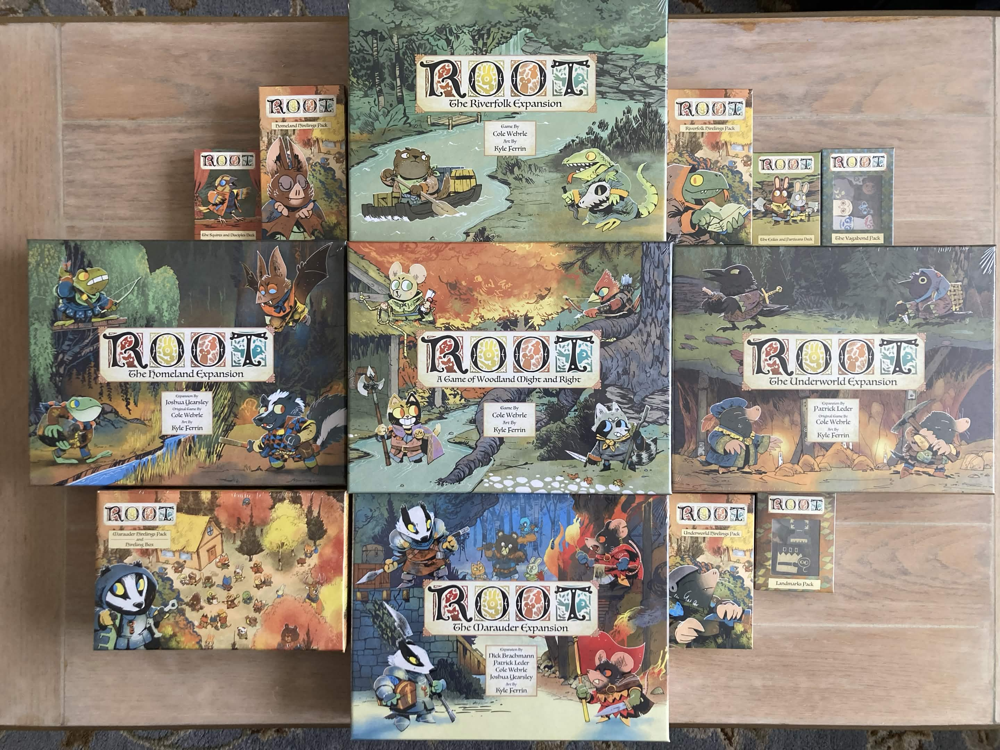
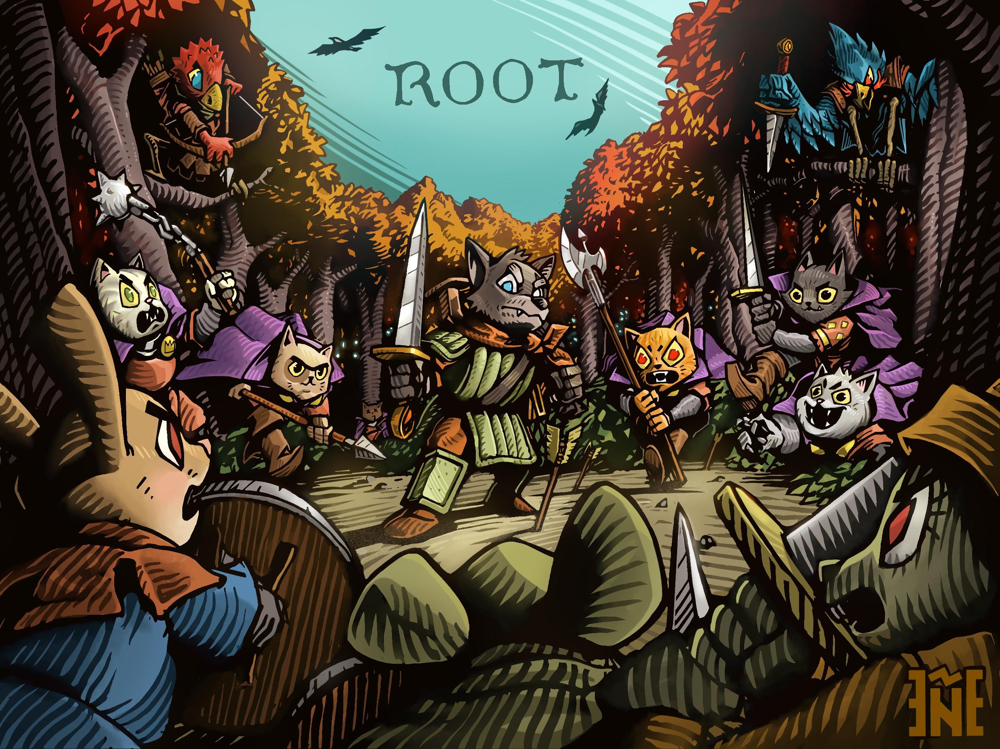
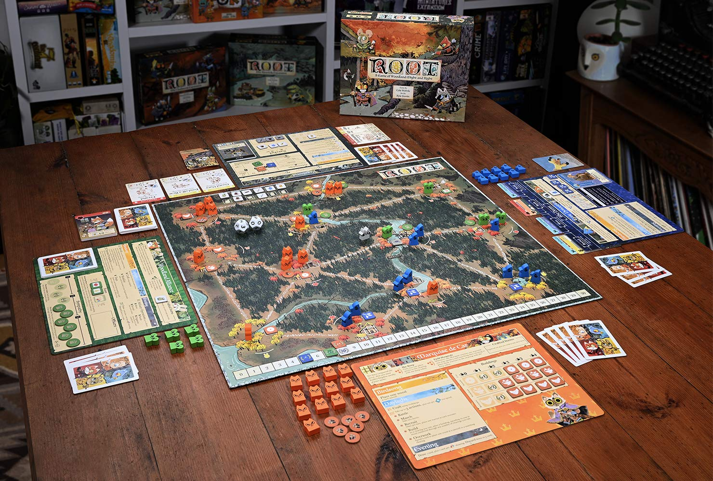
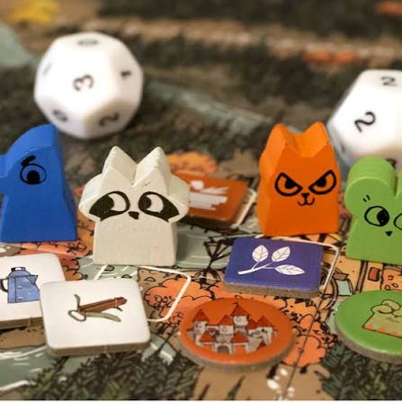

Expansões
Veja como as expansões aumentam as possibilidades do jogo.
Acessar páginaBlog acadêmico sobre jogos de tabuleiro
Este blog apresenta as facções, as expansões, os tokens e alguns vídeos para ajudar quem está começando a jogar.
Ver como jogar

Veja como as expansões aumentam as possibilidades do jogo.
Acessar página
Conheça a ideia principal de cada facção.
Acessar página
Encontre referências para melhorar os componentes da mesa.
Acessar página